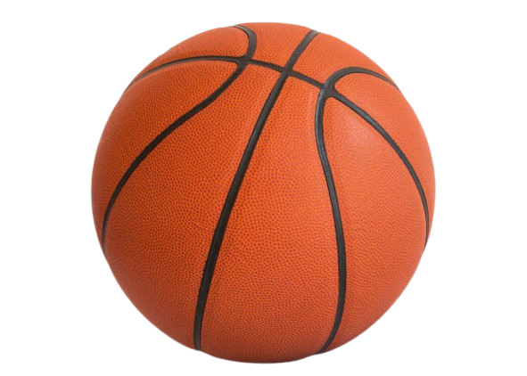
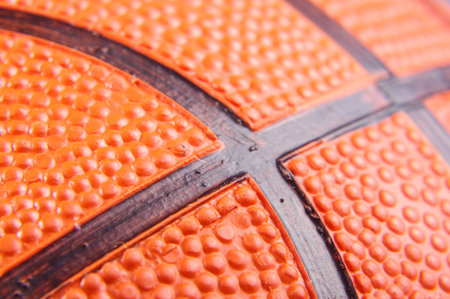
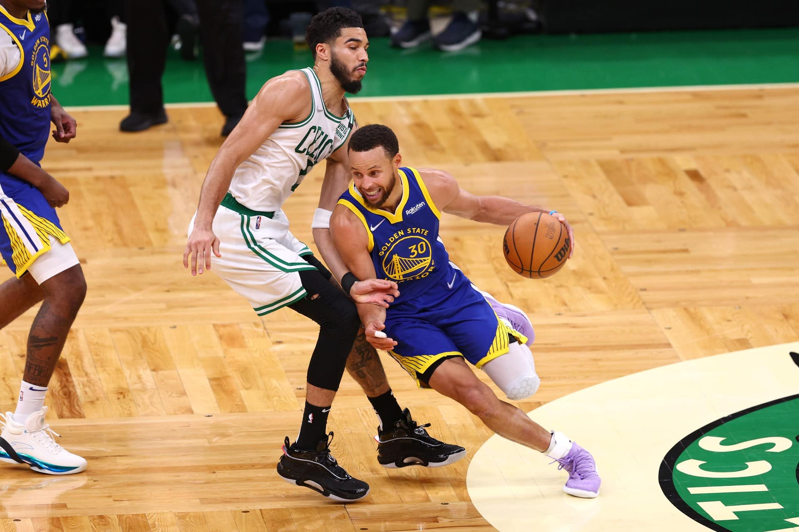
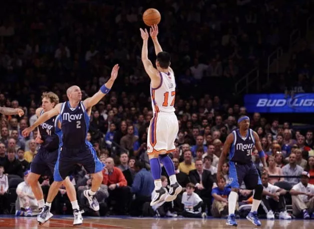
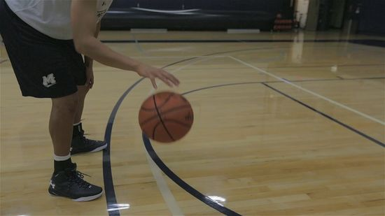
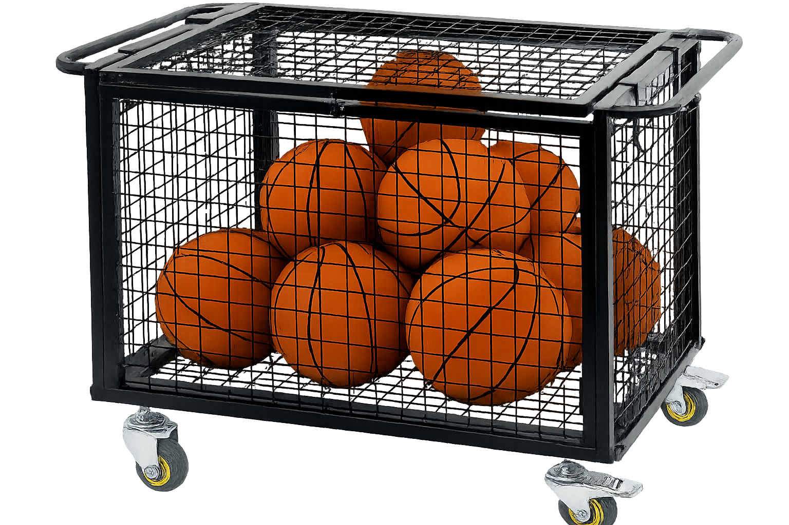
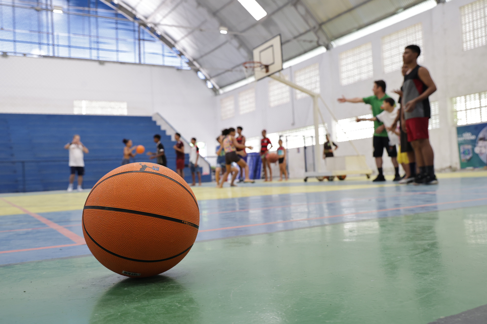

As imagens desta seção podem apresentar diferentes perspectivas da bola de basquete, como:

Vista frontal da bola destacando sua cor e textura.

Detalhes da superfície com relevos que ajudam na aderência.

Bola sendo utilizada em dribles durante uma partida.

Jogadores realizando arremessos em direção à cesta.

Bola em contato com o chão durante o quique.

Equipamentos esportivos em quadras de basquete.

Ambientes de treino e competições esportivas.